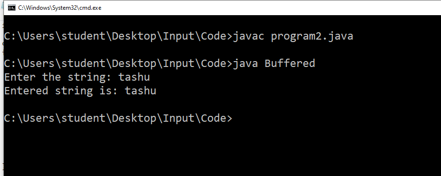

1 :- Enter the character from user using InputStreamReader
.
//Enter the character from user using InputStreamReader
import java.io.*;
class InputStreamReaderP{
public static void main(String args[])throws Exception{
InputStreamReader r=new InputStreamReader(System.in);
BufferedReader br=new BufferedReader(r);
System.out.println("Enter your name");
String name=br.readLine();
System.out.println("Welcome "+name);
}
}
Output :-
2 :- Enter the string from user using BufferedStreamReader.
import java.io.*;
class Buffered
{
public static void main ( String s[] ) throws IOException //handle the i/o exceptions
{
System.out.print ( "Enter the string: " );
BufferedReader input = new BufferedReader ( new InputStreamReader ( System.in ) ); // taking the
input
String inputString = input.readLine();
System.out.println ( "Entered string is: " + inputString );
}
}
Output :-

3 :- Enter the integer from user using Scanner class.
//Enter the integer from the user using Scanner class
import java.util.Scanner;
class A{
public static void main(String arg[])
{
Scanner s = new Scanner(System.in);
System.out.println("Enter an integer :-");
int a = s.nextInt();
System.out.println(a);
}
}
Output :-
4 :- Enter the float from user using Scanner class
import java.util.Scanner;
class FloatInputExample {
public static void main(String[] args) {
// Create a Scanner object to read user input
Scanner scanner = new Scanner(System.in);
System.out.print("Enter a float number: ");
// Check if the next token entered by the user is a float
if (scanner.hasNextFloat()) {
float userInput = scanner.nextFloat();
System.out.println("You entered: " + userInput);
} else {
System.out.println("Invalid input. Please enter a valid float number.");
}
// Close the Scanner to release resources
scanner.close();
}
}
Output :-
5 :- Enter the double from user using Scanner class
import java.util.Scanner;
class Double5
{
public static void main(String args[])
{
System.out.println("\nEnter the double from user using Scanner class.\n");
Scanner sc= new Scanner(System.in);
System.out.println("Enter a Double Value : ");
Double d= sc.nextDouble();
System.out.println("your entered double value is : "+d);
}
}
Output :-
6 :- Enter the boolean from user using Scanner class.
class Boolean6
{
public static void main(String[] args)
{
System.out.println("\nEnter the boolean from user using Scanner class.\n");
java.util.Scanner sc = new java.util.Scanner(System.in);
System.out.print("Enter a boolean value (true or false): ");
Boolean b = sc.nextBoolean();
System.out.println(b);
}
}
Output :-
7 :- Enter the short integer from user using Scanner class.
import java.util.Scanner;
class a
{
public static void main(String[] x)
{
//object of the Scanner class
Scanner s=new Scanner(System.in);
System.out.print("Enter a short integer value: ");
//invoking nextShort() method that reads an integer input by keyboard
//storing the input number in a variable num
int num = s.nextShort();
System.out.println("The Short integer entered by the user is: "+num);
}
}
Output :-
8 :- Enter the long integer from user using Scanner class.
class Long8
{
public static void main(String[] args)
{
System.out.println("\nEnter the long integer from user using Scanner class.\n");
java.util.Scanner sc = new java.util.Scanner(System.in);
System.out.print("Enter a Long Interger value : ");
long num = sc.nextLong();
System.out.println("your entered long integer value is : "+num);
}
}
Output :-
9 :- Get all characters from the file and display on the screen
import java.util.Scanner;
import java.io.*;
class test
{
public static void main(String[] args)
{
String fname;
Scanner scan = new Scanner(System.in);
// enter filename along with its extension
System.out.print("Enter the Name of File: ");
fname = scan.nextLine();
String line = null;
try
{
FileReader fileReader = new FileReader(fname);
// always wrap the FileReader in BufferedReader
BufferedReader bufferedReader = new BufferedReader(fileReader);
while((line = bufferedReader.readLine()) != null)
{
System.out.println(line);
}
// always close the file after its use
bufferedReader.close();
}
catch(IOException ex)
{
System.out.println("\nError occurred");
System.out.println("Exception Name: " +ex);
}
}
}
Output :-
10 :- Get all characters from the file, count number of lines, words, characters and display on the screen
import java.io.File;
import java.io.FileNotFoundException;
import java.util.Scanner;
class countFile
{
public static void ma
in(String args[])
{
String filePath = "file.txt";
try
{
File f=new File(filePath);
Scanner sc = new Scanner(f);
int lineCount = 0;
int wordCount = 0;
int charCount = 0;
while(sc.hasNextLine())
{
String line = sc.nextLine();
lineCount++;
charCount +=line.length();
String[] words =line.split(" ");
wordCount +=words.length;
}
System.out.println("\nGet All Characters from the file, Count the number of line, words, characters and display on the screen");
System.out.println("\nfile.txt : \nHello,\nGood Morning\nHow are you\n");
System.out.println("Number of Lines : "+lineCount);
System.out.println("Number of Words : "+wordCount);
System.out.println("Number of characters : "+charCount);
}
catch(FileNotFoundException e)
{
System.out.println("File not found : "+e.getMessage());
}
}
}
Output :-